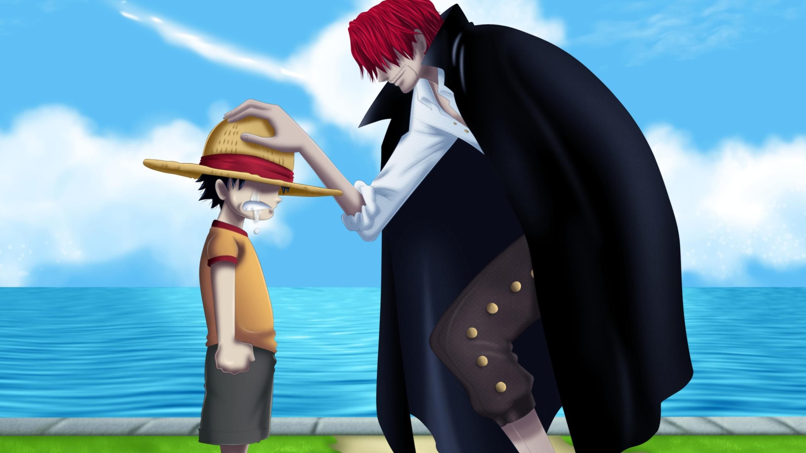
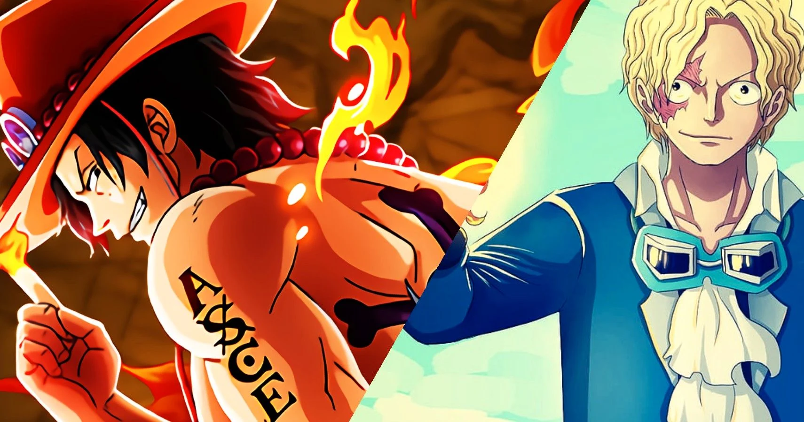
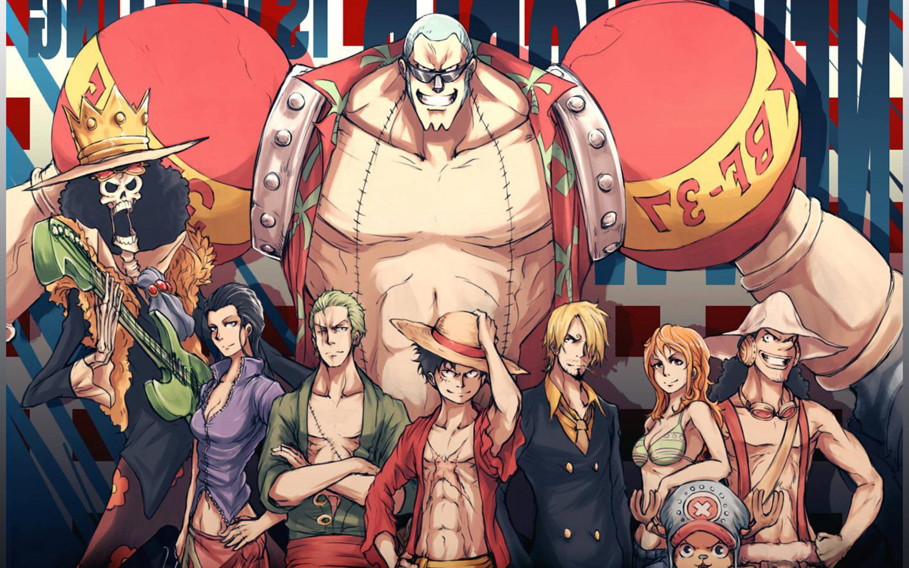
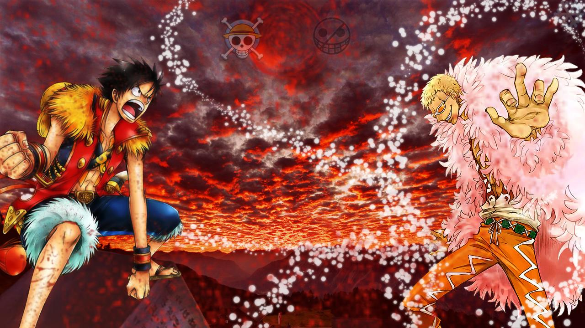
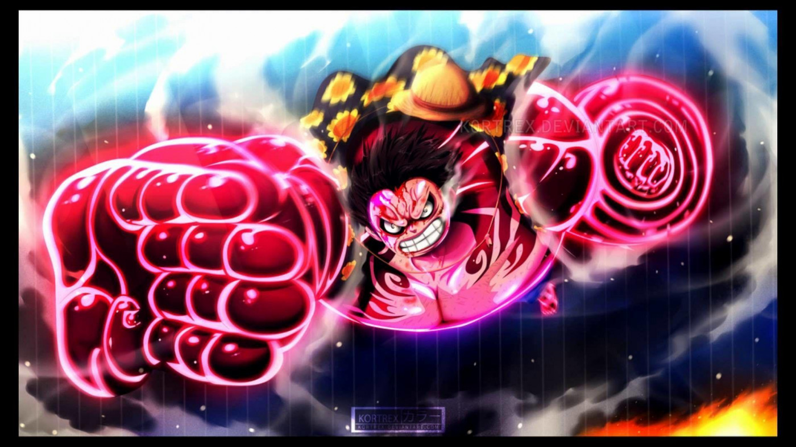

The West Blue
I grew up in the West Blue and set my sights on becoming the world's greatest pirate after meeting Shanks, a world-recognized pirate and emperor of the sea.
Straw Hat
I begged Shanks to let me join his pirate crew, but he told me I was too young and weak. He gave me his straw hat and made me promise to return it to him once I became a great pirate. My resolve of becoming the King of Pirates was set this day.
My Brothers
My dreams would only be wishes if it weren't for my brothers. We aren't blood related but we became brothers as we swore to live free lives and to let no one stop us from accomplishing our dreams. Ace is the one with black hair and Sabo is the one with blonde.
Education
They say who you surround yourself with is who you will become, so that's the first thing I focused on after setting off sea. I've met so many different people on my travels but these ones were special. They've taught me alot and helped me expand my skills and knowledge of the world.- Zoro - Swordsman (Green-Haired)
- How to properly treat a sword
- Endurance and Determination
- Nami - Navigator (Orange-Haired)
- How to use a log pose
- Adamant
- Usopp - Sniper (Long Nose)
- How to use a slingshot
- Sanji - Cook (Blonde-Haired)
- How to eat well
- What fish are good to eat
- Chopper - Doctor (Reindeer)
- Showed me the limits of my strength
- What herbs are best for making medicine
- Robin - Archeoligist (Black-Haired)
- How to read an ancient language
- Franky - Shipwright (Cyborg)
- How to control our ship the Sunny
- How to make a small robot
- Brook - Musician (Skeleton)
- Taught me how to play the violin
- Showed me how best to party
- Jimbei - Helmsman (Fish-Man)
- Taught me honor, respect and dignity

Experience
The world is big and many, like myself, had goals to find the legendary treasure and become the King of Pirates. This meant that I'd eventually run into someone who would want to fight. Here's a list of some of the big-shots I took down.
Skills
In order to protect my friends and as the foes I faced became stronger, I have developed a variety of different skills and techniques to fight stronger and quicker. Here's a video showing some of them.
Want to learn more? Click on My Wiki